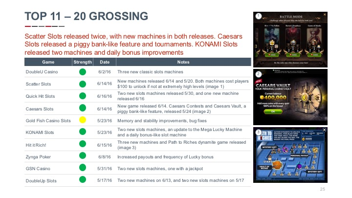

Social Casino Report: June 2016
Primary coin bonus
This month’s report goes deeper to include aesthetic details in addition to functional information. Our first recommendation involves the primary coin bonus, one of the most important yet least innovative features in social casino. We break down several social casino and non-casino games to analyze the full potential of this significant feature.
Feature recommmendations

Market updates
Economy deep dives

Subscriptions
Apple just announced that the App Store will offer subscriptions to all developers. To incentivize developers to adopt subscriptions, Apple will give developers an 85% revenue share for all players who subscribe for a year. In light of this, we have researched the top-grossing entertainment and information apps to recommend subscription best practices.
Feature recommmendations
Market updates
Economy deep dives
Quick wins
This month, we expanded the Quick Wins section to help fill your roadmap with features that are easy to implement and deliver high-ROI. These will keep your development team busy improving the aesthetic quality of your game while you spec the next home run.
Feature recommmendations
Market updates
Economy deep dives
Economy deep dive
The Economy Deep Dive section breaks down Infinity Slots, a game that was first released February 25, 2016, and is now the 25th highest grossing social casino game on iOS. Murka’s success, both with Infinity Slots and Scatter Slots, demonstrates the value of quality and innovation in social casino.
Feature recommmendations
Market updates
Economy deep dives